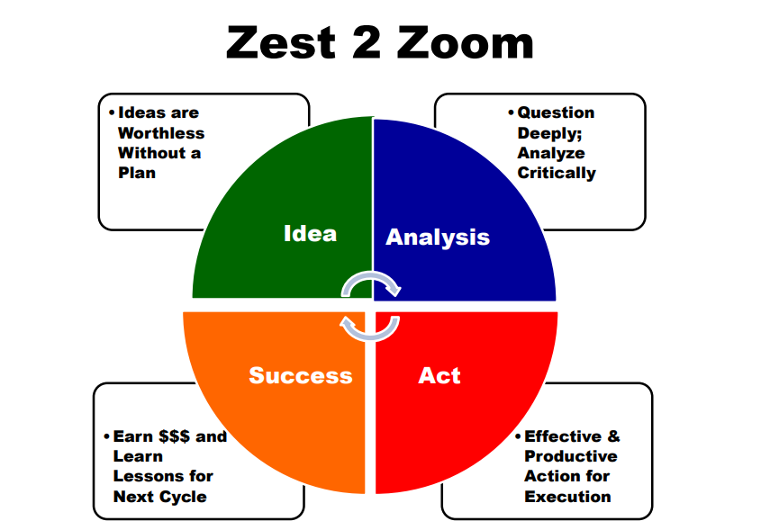
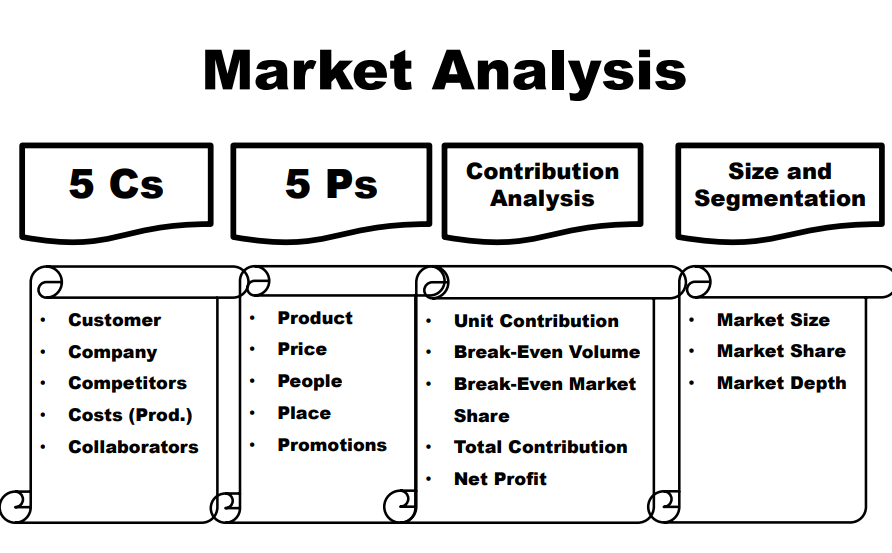
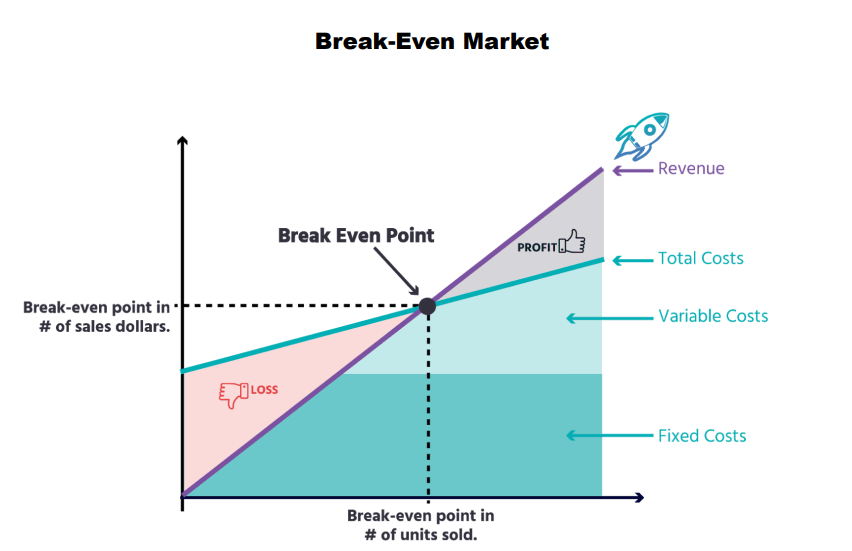
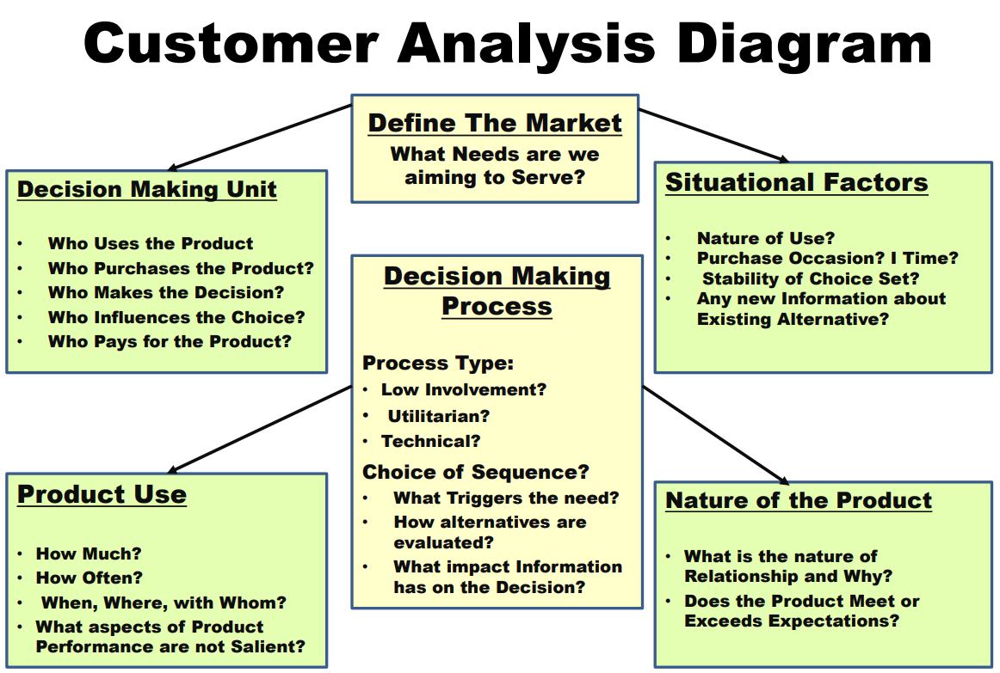
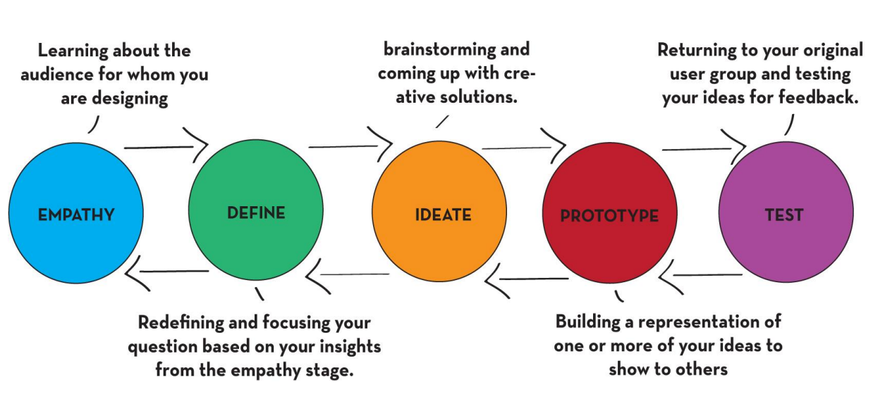

Entrepreneurship has been described
as the "capacity and willingness to
develop, organize and manage a
business venture along with any of its
risks in order to make a profit".
Why Entrepreneurship?
- Entrepreneurship can improve standards of living and
create wealth, not only for the entrepreneurs but also
for related businesses.
- Entrepreneurship spurs innovation - innovations,
particularly radical innovations that spawn entirely
new markets make radical changes and create
wealth.
- Entrepreneurship creates jobs – new and young
businesses, are the engine of net job creation.
- USP of the start-up world is its disruption and
diversification capability.
Zest 2 Zoom

idea are worth less with a plan .To start any business their should be proper idea and plan
After getting a idea and plan later analyze what should be done next think it deeply.
After analyzing later implement the and idea in correct way . Show your hard work in the action .
after you implement later u will earn from it and you get knowledge for next cycle to do better.
MARKET ANALYSIS


CUSTOMER ANALYSIS

IDEA GENERATION
Idea generation or ideation is the act of
forming ideas. It is a creative process that
encompasses the generation,
development and communication of new
thoughts and concepts, which become
the basis of your innovation strategy.
STEPS INVOLVED IN IDEA GENERATION
- Idea Selection
- Scrutiny Of All Aspects
- Feedback
- Feedback Reaction
- A Basic Version / Product
- Hitting The Market
- Go For A Test Drive
- Corrections And Improvements
- Growth Planning
- Time To Expand
DESIGN THINKING
A Method of Designing Products and Services
that are based on:
– What people need and want
– What people like or dislike
• In regards to production, packaging, marketing,
retailing, support, or all of them
• A skill that allows a designer to align what
people want with what can be done, and
produce a viable business strategy that
creates customer value and market
opportunity
DESIGN THINKING MINDSETS,TOOLS AND TEMPLETS
1. Think users first
2. Ask the right questions
3. Believe you can draw/ visualize
4. Commit to explore
5. Prototype to test
5 STEPS OF DESIGN THINKING

7 Essential Abilities of
Entrepreneurship
1. Identify an opportunity
2. Evaluate an idea and assess the market
3. Appreciate the risks and rewards of entrepreneurship
4. Leverage experiments to validate your idea and refine
your business strategy
5. Discover the key financial decisions any entrepreneur
must make in the early stages of a new venture
6. Understand the process of raising capital and how to
speak to investors
7. Learn from successful entrepreneurs and leading
venture capitalists, as well as peers
IDEA VALUATION
Idea Valuation is assessing the
reasonableness and quality of
ideas in order to develop
workable solutions”
5 STEPS OF TARGET FIXATION
1. Calculate Size of the Target Market
2. Decide % Market Share Wish to Capture?
3. Decide Desired Margin Per Unit Sold?
4. Compute Expected EBITDA
5. Estimate Probability of Success?
MANTRAS OF SUCCESS
"Never give in,
never give in,
never, never,
never, never– in
nothing, great or
small, large or
petty– never give
in except to
convictions of
honour and good
sense."